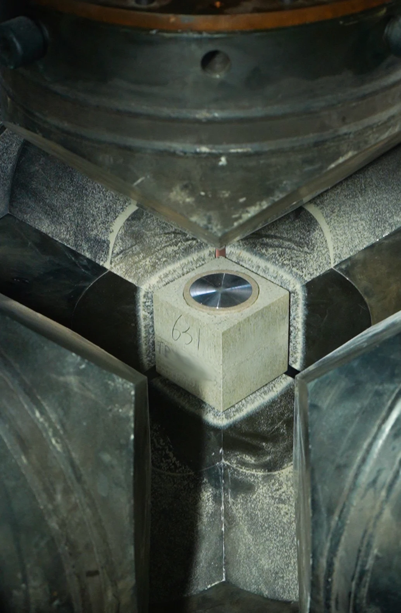

The HPHT synthesis of memorial diamonds is not a recipe to be followed. It is a dynamic system in which temperature and pressure are the primary control variables, and their interaction determines crystal nucleation rate, growth velocity, defect density, and final gem quality. Optimizing these parameters requires understanding the thermodynamic phase diagram of carbon, the transport properties of metal catalyst solvents, and the thermal gradients inside the growth cell. This article examines the temperature and pressure regimes used in industrial memorial diamond manufacturing, the optimization strategies that distinguish high-yield production from inconsistent output, and the practical implications for B2B partners evaluating manufacturing capability.
We write from the perspective of the manufacturer, not the consumer. The questions we address are: What temperature and pressure ranges produce the best crystal quality? How do catalyst composition and thermal gradient interact with these parameters? What happens when conditions drift outside the optimal window? And how does biological carbon feedstock — with its variable purity and trace element profile — influence the optimal synthesis parameters compared to generic graphite?
The Carbon Phase Diagram: Where Diamonds Form
Diamond is the high-pressure polymorph of carbon. At ambient conditions, graphite is the thermodynamically stable form. To convert graphite to diamond, the system must be driven into the diamond stability field — a region of the carbon phase diagram defined by pressures above approximately 1.5 GPa and temperatures above approximately 900°C. In practice, industrial HPHT synthesis operates well within this field, at pressures of 5–6 GPa and temperatures of 1,300–1,600°C, to achieve commercially viable growth rates.
The phase diagram is not merely a boundary map. It is a predictive tool. The position of the growth conditions within the diamond stability field determines the driving force for crystallization, which in turn controls nucleation density and growth rate. Too close to the diamond-graphite equilibrium line, and the driving force is insufficient — growth is slow, and the crystal may incorporate graphite inclusions. Too far from equilibrium, and the driving force is excessive — nucleation becomes uncontrollable, producing multiple small crystals rather than one large gem-quality stone.
The Diamond-Graphite Equilibrium Line
The equilibrium line between diamond and graphite slopes upward in pressure-temperature space: higher temperatures require higher pressures to maintain diamond stability. At 1,400°C, the equilibrium pressure is approximately 4.8 GPa. At 1,600°C, it rises to approximately 5.5 GPa. Industrial HPHT presses typically operate at 5.5–6.0 GPa across the full temperature range, providing a safety margin that prevents reversion to graphite even if local thermal fluctuations occur.
The operating point is chosen not for maximum thermodynamic driving force but for optimal crystal quality. A moderate supersaturation — the degree to which the system is displaced from equilibrium — produces the best results. For memorial diamond synthesis using biological carbon, the operating point is typically set at 5.5 GPa and 1,450°C, with adjustments made based on the carbon feedstock analysis and the desired crystal size.
Temperature Optimization: The Growth Rate Problem
Temperature in the HPHT growth cell serves two functions. First, it maintains the diamond in its thermodynamic stability field. Second, it controls the solubility of carbon in the metal catalyst and the rate at which carbon diffuses from the dissolution zone to the crystallization zone. Both functions are critical, and their interaction creates the temperature optimization problem.
Carbon Solubility and the Temperature Gradient
In HPHT synthesis, carbon dissolves into the metal catalyst at the high-temperature end of the growth cell and precipitates onto the diamond seed at the low-temperature end. The temperature difference between these zones — typically 30–80°C — creates the concentration gradient that drives carbon transport. The solubility of carbon in the catalyst increases exponentially with temperature, so even a modest temperature gradient produces a significant concentration difference.
The optimal temperature gradient depends on the catalyst composition. Nickel-iron alloys have higher carbon solubility than nickel-manganese-cobalt alloys at equivalent temperatures, so they can support larger gradients without excessive supersaturation. At BioGem Lab, we use a proprietary catalyst formulation optimized for biological carbon feedstock, with a temperature gradient of approximately 50°C between dissolution and crystallization zones. This gradient balances growth rate against defect formation — a steeper gradient would grow the crystal faster but would also increase the probability of inclusions and structural imperfections.
The Temperature Ceiling: Defect Formation
Higher temperatures increase growth rate but also increase defect density. Above approximately 1,550°C, several degradation mechanisms become significant. Plastic deformation — the movement of dislocations through the crystal lattice under thermal stress — becomes more active at higher temperatures, producing brown coloration and reduced optical clarity. Nitrogen incorporation from biological carbon sources accelerates with temperature, making color control more difficult. And catalyst breakdown — the oxidation or decomposition of the metal solvent at the high-temperature end of the cell — can introduce metallic inclusions into the growing crystal.
The practical temperature ceiling for memorial diamond synthesis is approximately 1,600°C. Above this point, the incremental gain in growth rate is outweighed by the decline in crystal quality. For biological carbon, which introduces additional variability in impurity content, the recommended maximum is often lower — 1,520–1,550°C — to maintain consistent color and clarity outcomes.

HPHT pressurization system in operation. The temperature and pressure profiles are monitored and adjusted in real time to maintain optimal growth conditions.
Pressure Optimization: Uniformity and Stability
Pressure in HPHT synthesis serves a different purpose than temperature. While temperature controls the kinetics of crystal growth, pressure maintains the thermodynamic stability of the diamond phase. Without sufficient pressure, the carbon would not crystallize as diamond — it would remain as graphite or form amorphous carbon. But pressure also influences growth kinetics indirectly, through its effect on catalyst density, carbon solubility, and thermal conductivity.
Pressure Uniformity in the Growth Cell
The pressure inside an HPHT growth cell is not perfectly uniform. Geometric effects, material compression, and thermal expansion create local pressure variations that can be significant — up to ±0.3 GPa in some press designs. These variations matter because the diamond-graphite equilibrium line is steep: a 0.3 GPa variation at 1,450°C corresponds to a shift of approximately 40°C in the effective stability boundary. Local regions of insufficient pressure can cause graphite nucleation or diamond dissolution, while regions of excessive pressure can promote unwanted nucleation on the cell walls.
Optimizing pressure uniformity is an engineering problem. The shape of the growth cell, the compressibility of the gasket material, the thermal expansion coefficients of the cell components, and the load distribution of the press anvils all contribute. Modern HPHT presses use finite element modeling to predict pressure distribution and iterative design refinement to minimize variation. At BioGem Lab, our growth cells are designed to maintain pressure uniformity within ±0.1 GPa across the active growth zone, which is achieved through custom-machined pyrophyllite gaskets and calibrated anvil alignment.
Pressure Stability During Growth
Pressure stability is as important as uniformity. Fluctuations during growth — caused by thermal cycling, gasket creep, or press load variation — create transient conditions where the diamond may be exposed to sub-stable pressures. These transients are particularly damaging during the early stages of growth, when the seed crystal is small and the surface area available for re-nucleation is large. A pressure drop of even 0.2 GPa for a few minutes can cause the seed to partially dissolve or develop surface pits that propagate as defects throughout the crystal.
Industrial HPHT presses address this through closed-loop pressure control. Hydraulic load cells monitor the applied force, and feedback systems adjust the press position to compensate for gasket compression and thermal expansion. The response time of these systems — typically 1–5 seconds — is fast enough to correct for most disturbances but not for rapid thermal transients. For this reason, temperature control and pressure control are coupled: sudden temperature changes are ramped gradually to avoid pressure fluctuations caused by thermal expansion.
The Interaction of Temperature and Pressure
Temperature and pressure do not act independently in HPHT synthesis. Their interaction determines the effective driving force for crystallization, the stability of the catalyst, the solubility of carbon, and the mechanical stress on the growing crystal. Understanding these interactions is essential for process optimization.
The Supersaturation Window
Supersaturation — the degree to which the carbon concentration in the catalyst exceeds the equilibrium solubility at the crystallization temperature — is the true driver of crystal growth. It is determined by both temperature (through the temperature gradient) and pressure (through the pressure dependence of solubility). The optimal supersaturation window for gem-quality diamond growth is narrow: too low, and growth is negligible; too high, and spontaneous nucleation produces polycrystalline material rather than a single crystal.
For memorial diamond synthesis, the target supersaturation is typically 1.2–1.5 times the equilibrium solubility. This range provides sufficient driving force for growth rates of 2–5 mg/hour (corresponding to approximately 0.01–0.03 carats per day for a standard growth cell) while maintaining single-crystal morphology. Achieving this supersaturation requires precise coordination of temperature and pressure: a 50°C temperature gradient at 5.5 GPa produces a different supersaturation than the same gradient at 6.0 GPa, because carbon solubility is pressure-dependent.
Catalyst Stability Under Combined Loading
The metal catalyst solvent must remain molten and chemically stable throughout the growth run. The melting point of typical catalyst alloys (Ni-Fe or Ni-Mn-Co) is 1,200–1,350°C at ambient pressure, but it increases with pressure at a rate of approximately 3–5°C per GPa. At 5.5 GPa, the effective melting point is 1,230–1,380°C. This means that the crystallization zone, at approximately 1,400°C, is safely above the melting point, but the margin is not large. A pressure drop of 0.5 GPa could reduce the melting point below the operating temperature, causing localized solidification and disrupting carbon transport.
Catalyst oxidation is another stability concern. Even trace oxygen in the growth cell — from incomplete vacuum pumping, outgassing from cell materials, or residual moisture in the carbon feedstock — can oxidize the catalyst at high temperature and pressure. Oxidized catalyst loses its carbon solubility and may form oxide inclusions in the diamond. For biological carbon, which has been through a purification process involving oxidative treatments, residual oxygen is a particular concern that requires careful outgassing before synthesis begins.
Process Optimization for Biological Carbon
The optimization of temperature and pressure for memorial diamond synthesis is complicated by the use of biological carbon feedstock. Unlike high-purity synthetic graphite, which has consistent composition and predictable behavior, biological carbon carries the chemical history of its source material. Hair and fur contain nitrogen, sulfur, and trace metals. Plant material contains oxygen, phosphorus, and silicon. These impurities do not simply disappear during purification; they are reduced to levels compatible with diamond synthesis but not eliminated entirely.
Nitrogen Management Through Temperature Control
Nitrogen is the most significant impurity in biological carbon. As described in our article on memorial diamond color science, nitrogen incorporation into the diamond lattice is strongly temperature-dependent. At 1,450°C, nitrogen is incorporated as isolated substitutional atoms (type Ib), producing yellow coloration. At higher temperatures, nitrogen aggregation accelerates, converting type Ib to type Ia and reducing yellow color. However, aggregation also introduces lattice strain that can degrade clarity.
The optimization strategy for nitrogen management is therefore a compromise. Lower growth temperatures (1,350–1,400°C) reduce nitrogen incorporation rate but produce stronger yellow color. Higher temperatures (1,500–1,550°C) promote aggregation and reduce yellow color but increase defect density. For memorial diamonds where near-colorless appearance is desired, the optimal temperature is typically 1,480–1,520°C, which balances aggregation kinetics against defect formation. This range is determined empirically for each batch of purified carbon based on pre-synthesis elemental analysis.
Pressure Adjustment for Carbon Source Density
The density and particle size of the carbon feedstock influence pressure distribution in the growth cell. Biological carbon, after purification and graphitization, typically has lower bulk density than commercial graphite powders. This lower density means that the carbon pack compresses more under load, creating local pressure gradients that differ from those predicted for dense graphite. The effect is minor for small crystals but becomes significant for growth runs targeting crystals above 0.5 carats, where the carbon pack volume is larger.
The practical adjustment is to increase the nominal operating pressure by 0.1–0.2 GPa when using lower-density biological carbon. This compensates for the compressibility difference and ensures that the crystallization zone remains within the diamond stability field. The adjustment is verified through in-situ pressure monitoring using calibrated load cells and post-run cell examination to confirm uniform compression.
Quality Control and Process Validation
Optimizing temperature and pressure is not a one-time calibration. It is a continuous process of measurement, analysis, and adjustment. Each growth run provides data that refines the understanding of how the specific equipment, catalyst, and carbon feedstock interact. Systematic process validation is essential for consistent production.
In-Process Monitoring
Modern HPHT presses are instrumented with thermocouples, pressure sensors, and power monitors that record the actual conditions experienced by the growth cell. These data are logged at intervals of 1–10 seconds and stored for post-run analysis. Key metrics include: temperature stability (standard deviation over the growth duration), pressure stability, power consumption trends (which indicate changes in cell resistance that may signal catalyst degradation), and thermal cycle compliance (whether the programmed temperature ramp was achieved).
At BioGem Lab, each growth run generates approximately 50,000 data points. These are analyzed automatically to flag deviations from the target profile. Runs with temperature excursions exceeding ±15°C or pressure deviations exceeding ±0.15 GPa are flagged for detailed review. In most cases, the crystal is still usable, but the data inform adjustments to the process parameters for subsequent runs. This closed-loop quality system is what enables consistent production from variable biological carbon inputs.
Post-Synthesis Characterization
After the growth run, the crystal is characterized to validate the process. Measurements include weight (growth rate verification), dimensions (morphology assessment), color grade (nitrogen incorporation indicator), clarity (defect density), and spectroscopic analysis (impurity identification). These data are correlated with the process parameters to build empirical models that predict outcomes from inputs.
Over time, these models become the basis for predictive process control. Instead of running each batch with generic parameters, the system uses the carbon analysis, historical data, and target specifications to calculate the optimal temperature and pressure profile for that specific run. This approach — which we term "batch-adaptive synthesis" — is the key to achieving consistent quality from the inherently variable biological carbon feedstock.
What Partners Should Know About Process Control
For B2B partners evaluating memorial diamond manufacturers, the sophistication of temperature and pressure control is a critical capability indicator. A manufacturer who cannot describe their operating parameters, monitoring systems, and quality control protocols in quantitative terms is unlikely to deliver consistent results. The questions partners should ask include:
- What is the nominal operating pressure and temperature range?
- What is the measured pressure uniformity across the growth cell?
- How is temperature stability monitored and controlled during growth?
- What process data are collected, and how are they used for quality improvement?
- How are process parameters adjusted for different carbon sources or target specifications?
- What is the typical growth rate, and how does it vary with crystal size?
The answers to these questions reveal whether the manufacturer operates as a precision engineering facility or a batch processor. At BioGem Lab, we provide partners with detailed process documentation for every production batch, including the full temperature and pressure profile, growth rate data, and post-synthesis characterization results. This transparency is not merely a service feature; it is a quality assurance mechanism that enables continuous improvement and builds the trust essential for long-term B2B relationships.
Memorial diamond manufacturing is an industrial process, and industrial processes are defined by their control systems. The temperature and pressure parameters described in this article are the foundational variables upon which crystal quality depends. Manufacturers who invest in understanding, measuring, and optimizing these parameters will deliver superior results. Those who treat HPHT synthesis as a black box will not.
Frequently Asked Questions
What temperature is used for HPHT memorial diamond synthesis?
Industrial HPHT memorial diamond synthesis typically operates at 1,350–1,600°C. The optimal temperature depends on the carbon source, target crystal size, and desired color. For biological carbon, 1,450–1,520°C is the typical range that balances growth rate against nitrogen incorporation and defect formation.
What pressure is required for HPHT diamond growth?
Diamond synthesis requires pressures above 1.5 GPa to enter the diamond stability field. Industrial presses operate at 5.5–6.0 GPa to provide a safety margin and achieve practical growth rates. Pressure uniformity within ±0.1 GPa across the growth zone is critical for single-crystal growth.
How does biological carbon affect HPHT synthesis parameters?
Biological carbon has variable impurity content (nitrogen, sulfur, trace metals) and lower bulk density than commercial graphite. This requires adjusted temperature profiles to manage nitrogen incorporation and slightly elevated pressure to compensate for compressibility differences. Pre-synthesis elemental analysis is essential for parameter optimization.
Why is temperature stability important during HPHT growth?
Temperature excursions cause pressure fluctuations through thermal expansion, disrupt carbon solubility gradients, and can trigger catalyst solidification or decomposition. Temperature stability within ±15°C is required for consistent crystal quality. Modern presses use closed-loop control with 1–10 second response times.
Li Lihua — Chief Scientist
Patent inventor ZL 201010565778.9. View profile →
Explore Memorial Diamond Manufacturing
Technical capabilities, production timelines, and partnership structures for pet cremation services and memorial brands.
Related Articles
What Is HPHT Diamond Growth?
Fundamentals of HPHT diamond synthesis and how extreme conditions create genuine gems from biological carbon.
Crystal Lattice Stability
How diamond maintains its tetrahedral structure under 5.5 GPa pressure and what happens when pressure deviates.
Metal Catalyst Solvents
The role of Ni-Mn-Co alloys in HPHT synthesis and how catalyst choice affects growth rate and clarity.